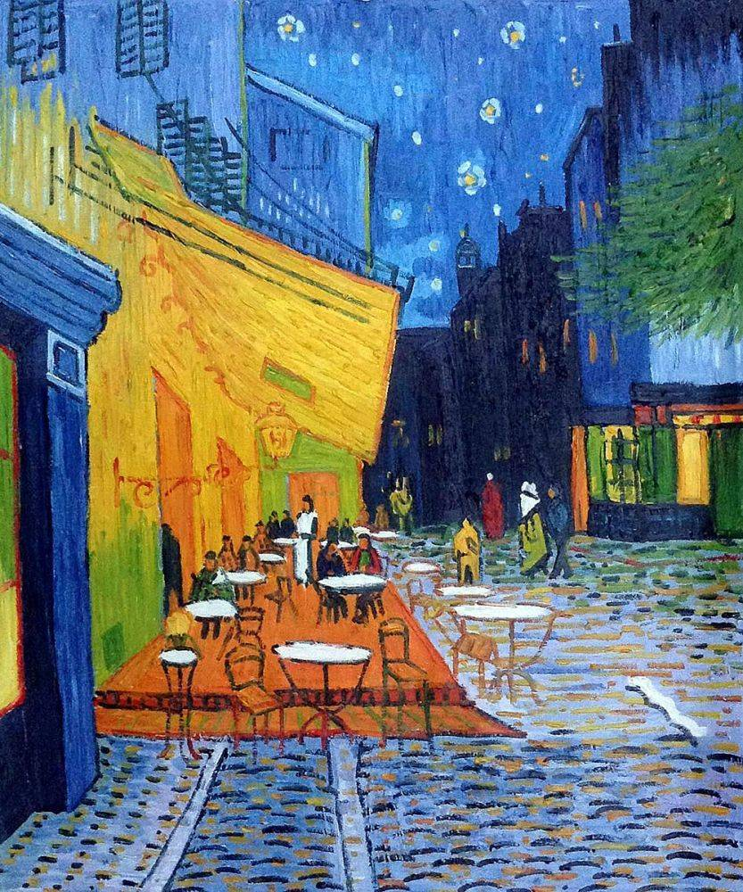

LET'SA GO. 
>About me. Obsessions of mine include avocados, anything to do with art (drawing, painting, and coloring), and my animals. My "skills" in art help with my anxiety and calm me down which is actually quite beneficial if we're being honest. My animals are also helpful towards calming down. But other than all that jazz, I'm not a complicated person.